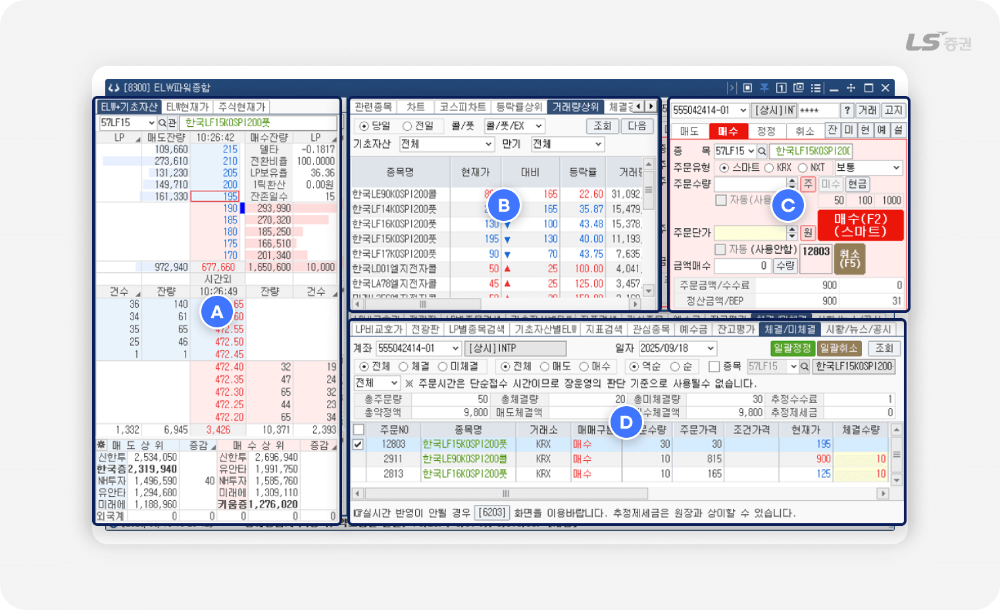
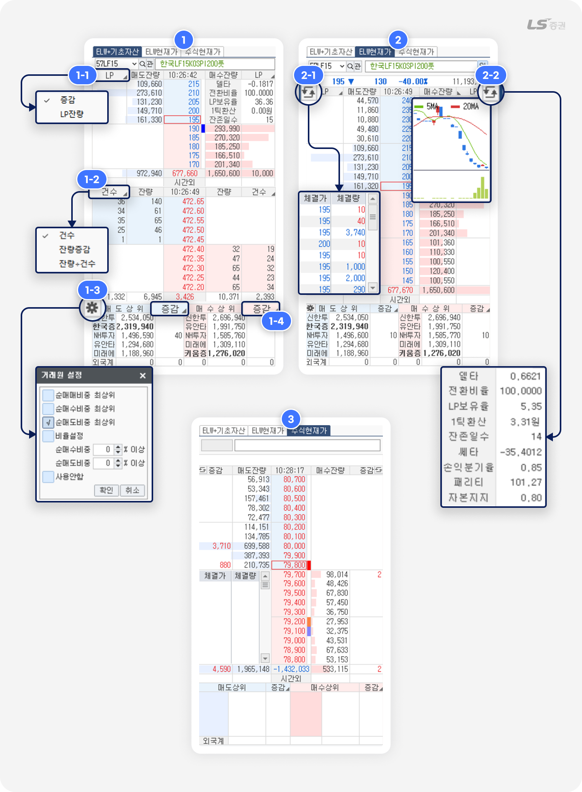
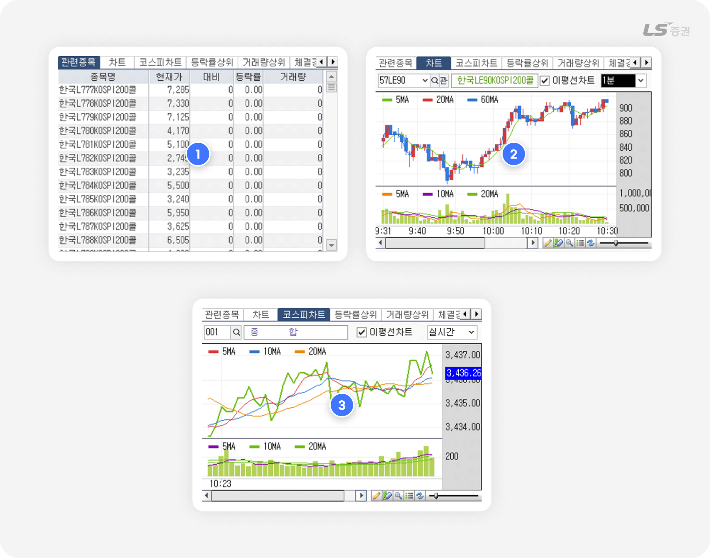
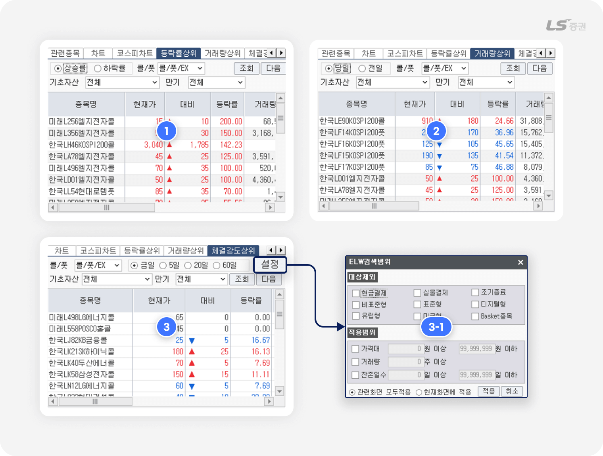
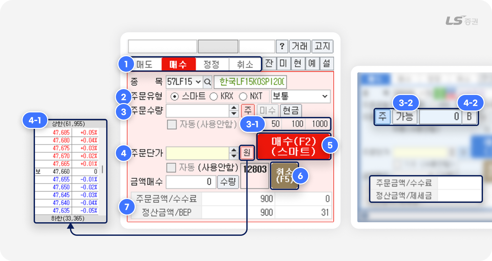
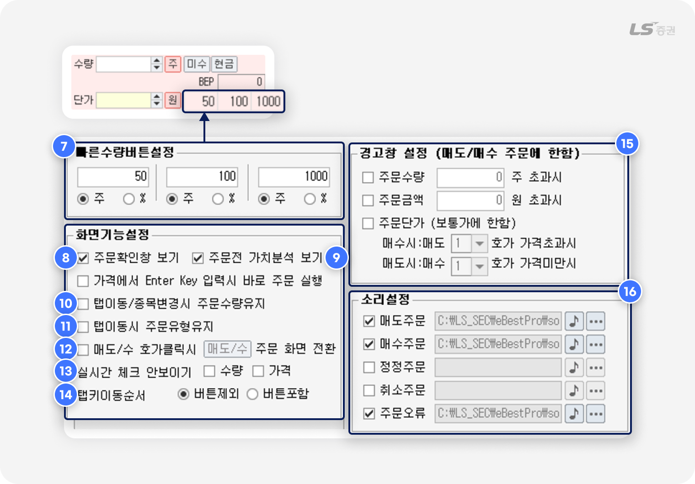
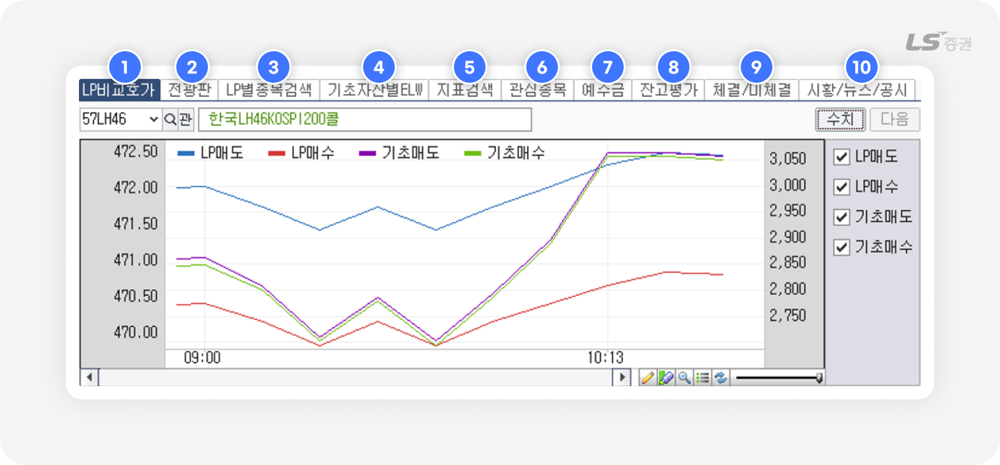
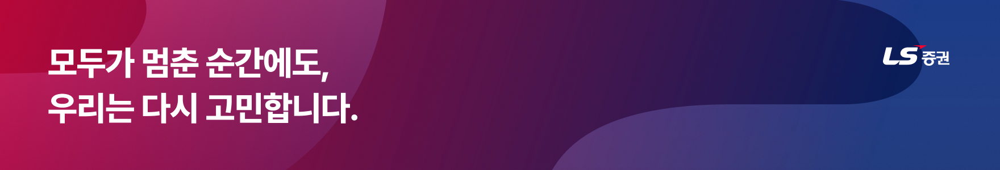

.png)
[8300] ELW 파워종합
ELW 거래, 1초의 승부!
올인원 주문 솔루션!
ELW(주식워런트증권)은 기초자산 가격에 연동되어 가치가 변하는 파생상품의 일종입니다.
주식과 달리 만기가 존재하고, 작은 가격 변동에도 레버리지 효과가 크게 작용해 수익과 손실이 빠르게 변동합니다.
따라서 ELW 거래에서는 정보 확인, 종목 선택, 주문 실행 과정이 신속하게 연결되는 것이 무엇보다 중요합니다.
[8300] ELW 파워종합 화면은 시세 흐름, 기초자산 정보, 프리미엄, 내재가치 등 주요 지표를 한눈에 확인하면서 곧바로 주문할 수 있고, 주문 내역과 보유 현황을 동시에 관리해 빠른 의사결정이 필요한 ELW 거래에 최적화된 기능을 제공합니다.
빠른 대응으로 신속하고 정확한 의사결정을 지원하는
이 화면이 ELW 거래에 필요한 이유!
| 화면 | 설명 |
|---|---|
| 호가와 주문창 통합 제공 | ELW 호가창과 주문 입력창을 동시에 활용하여 빠른 시세 확인과 주문 실행 가능 |
| 기초자산 및 지표 연동 | 기초자산 가격, 델타·이론가 등 ELW 주요 지표를 주문 시 참고자료로 활용 |
| 계좌 및 잔고 관리 기능 | 보유 종목, 매입단가, 평가손익 등을 즉시 확인하여 주문과 계좌 관리가 유기적으로 연결 |
필요한 기능만 모아, 간결하게 정리한
01기본 화면 구성
LS증권의 [8300] ELW 파워종합은 ‘조회–분석–주문–관리’ 과정을 단일 화면으로 통합했습니다.
시세와 종목 정보를 확인하고 곧바로 주문으로 이어갈 수 있어 변동성이 큰 ELW 매매에 효율적인 구성입니다.

화면은 다음과 같이 4개의 영역으로 나누어집니다.
| 번호 | 영역 | 주요기능 |
|---|---|---|
| A | 호가 / 체결 정보 | 선택 종목의 매수/매도 호가 및 체결량 등의 정보를 확인할 수 있습니다. |
| B | 종목 정보 | 종목 시세, 차트, 뉴스, 순위 등 다양한 종목 현황을 파악할 수 있습니다. |
| C | 주문 실행 | 매수/매도/정정/취소 주문을 접수할 수 있습니다. |
| D | 계좌 / 주문 관리 | 시세 정보, 계좌 상태와 주문 현황을 조회하고 주문을 정정/취소할 수 있습니다. |
시장 흐름 그대로 즉시 확인하는
02호가 / 체결 정보 (A영역)
호가 및 체결 정보 조회

-
1
ELW+기초자산
- ELW 현재가 5호가, 기초자산 현재가 5호가, 거래원 상위 정보를 확인할 수 있습니다.
- (1-1번) 클릭 시 ELW 종목의 매수·매도 수량 증감 / LP 항목을 전환하여 조회할 수 있습니다.
- (1-2번) 클릭 시 ELW 기초자산의 체결건수 / 체결 잔량증감 / 체결 잔량 + 체결건수 항목을 전환하여 조회할 수 있습니다.
- (1-3번) 설정 버튼으로 거래원 정렬 및 조회 조건을 설정할 수 있습니다.
- (1-4번) 클릭 시 주요 거래원별 매수·매도 수량 증감 / 순매수비율(%) / 매수·매도 비중(%) 항목을 전환하여 조회할 수 있습니다.
-
2
ELW현재가 탭
- ELW 현재가 10호가, 시세 정보, 거래원 상위 정보를 확인할 수 있습니다.
- (2-1번) 전환 버튼 클릭 시 좌측 하단에서 체결 정보 / 시세 정보를 전환하여 조회할 수 있습니다.
- (2-2번) 전환 버튼 클릭 시 우측 상단에서 ELW 주요 지표 / 차트를 전환하여 조회할 수 있습니다.
-
3
주식현재가 탭
- 선택한 ELW 종목의 기초자산의 현재가 10호가를 조회할 수 있습니다.
- 전환 버튼 클릭 시 좌측 하단, 우측 상단에서 체결 정보, 시세 정보, 차트 등을 전환하여 조회할 수 있습니다.
LP(유동성 공급자)란?
-
LP(Liquidity Provider, 유동성 공급자)는 투자자가 언제든지 원할 때 거래할 수 있도록 매수 · 매도 호가를 지속적으로 제시하며, 유동성을 공급하는 중재자 역할을 합니다.
이를 통해 기초자산과 ELW 가격 간의 괴리를 완화하고, ELW 시장의 안정성을 높이는 데 기여합니다. -
시장 참여자들의 실제 수급 상황이 왜곡되는 것을 방지하기 위해, ELW의 거래량이나 관여율 지표에서는 LP 거래를 별도로 구분해 해석하는 것이 필요합니다.
또한, 투자주의종목 지정 기준을 산출할 때에도 LP거래량을 제외하고 계산합니다.
가치를 발견하고, 기회를 발굴하는,
03종목 정보 (B영역)
관련종목 · 차트

-
1
관련종목 탭
- 기초자산이 동일한 종목의 목록 및 시세를 확인할 수 있습니다.
-
2
차트 탭
- ELW 현재가 종목 차트를 조회할 수 있습니다.
-
3
코스피 차트 탭
- 코스피를 비롯한 코스피업종, 코스닥업종, 섹터지수, 특수계열지수의 이평선 및 거래량 추이를 차트로 조회할 수 있습니다.
등락률 · 거래량 · 체결강도 상위 종목

-
1
등락률상위 탭
- ELW 전체 종목 중 당일 등락율 상위 현황을 확인할 수 있습니다.
-
2
거래량상위 탭
- ELW 전체 종목 중 당일 거래량 상위 현황을 확인할 수 있습니다.
-
3
체결강도상위 탭
- ELW 전체 종목 중 당일 체결강도 상위 현황을 확인할 수 있습니다.
- '설정' 버튼(3-1번) 클릭 시 ELW 검색범위를 제외하거나 적용하는 조건을 설정할 수 있습니다.
복잡한 절차 없이, 신속하게 한 번에
04주문 실행 (C영역)
매도 · 매수 · 정정 · 취소 주문 기능

-
1
주문 버튼 및 연동 기능
- 매수/매도/정정취소 버튼이 나란히 배치되어 있으며, 입력한 조건에 따라 즉시 주문을 실행할 수 있습니다.
- 우측의 잔(잔고), 미(미체결), 현(현재가), 예(예수금), 설(설정) 버튼을 통해 관련 기능 화면으로 빠르게 전환할 수 있습니다.
-
2
거래소 및 주문유형 선택
- 스마트 / KRX / NXT 중 주문하려는 거래소를 선택합니다.
- 스마트는 당사가 정한 최선집행기준(SOR)에 따라 KRX와 NXT 중 한 곳으로 주문을 제출합니다.
- 스마트주문시스템(SOR)에 대한 자세한 설명은 홈페이지에서 확인할 수 있습니다.
-
3
주문 수량 입력
- 수량을 직접 입력하거나 ‘주’ 버튼을 눌러 지정 수량을 선택해 입력할 수 있습니다.
-
자주 사용하는 수량 단위(3-1번)을 설정하면 클릭 한 번에 입력할 수 있습니다.
(예: 50과 100을 순서대로 클릭 시 150주 입력) - 매도 주문인 경우, ‘가능’ 버튼(3-2번)을 클릭하면 잔고 기준으로 매도가능 수량이 입력됩니다.
-
4
주문단가 입력
- ‘원’ 버튼 클릭 시 선택한 종목의 호가창(4-1번)에서 단가를 선택할 수 있습니다.
- 매도 주문인 경우, ‘B’버튼(4-2번)을 클릭하면 BEP단가 기준으로 계산된 주문단가가 자동으로 입력됩니다.
-
5
매수 주문 / 매도 주문 버튼
- 직접 클릭하거나 단축키로 매수 주문(F2) 또는 매도 주문(F3)을 할 수 있습니다.
-
6
주문 취소 버튼
- 매수/매도 화면에서도 버튼이나 단축키로 빠르게 미체결 주문을 취소(F5) 할 수 있습니다.
-
7
주문 전 비용 추산
- 주문금액, 수수료, 정산금액, BEP 단가, 제세금 등 예상 비용을 보여줍니다.
FOK / IOC 주문조건이란?
-
FOK(Fill-Or-Kill)은 모든 수량을 체결할 수 있을 때만 주문을 체결하고, 단 1주라도 체결할 수 없으면 주문 전체를 취소합니다.
예 ) 50주 주문 시 40주만 체결 가능한 경우, 50주 주문 전체를 취소합니다. -
IOC(Immediate-Or-Cancel)은 체결 가능한 수량만큼 체결하고, 체결되지 않은 잔량은 취소합니다.
예) 50주 주문 시 40주만 체결 가능한 경우, 40주를 체결하고 10주는 취소합니다.
BEP 단가를 고려하며 거래하자
BEP란 손익분기점, 즉 수수료 · 세금 등 제비용을 포함해 손익이 0이 되는 기준 가격으로 투자 원금을 회수하는 손절 지점이나, 이익을 얻는 매도 목표가를 정하는 데 참고할 수 있어요.
참고해주세요!
주문 화면에 표시되는 수수료 / 제세금은 아래와 같이 추정된 값으로, 실제 주문 시 비용과 다를 수 있습니다.
- 수수료 : HTS 일괄 수수료로 계산
- 제세금 : 0.3% 일괄 적용
수수료 및 세금에 대한 자세한 사항은 LS증권 홈페이지 메뉴에서 확인할 수 있습니다.
- 고객센터 - 고객가이드 - 업무안내 - 수수료 / 세금 확인하기
주문 설정 기능

주문 전 자동 입력 설정
-
1
초기가격 :
체크 시 매도/매수/정정 주문화면에서 주문단가에 초기 설정 가격이 자동 입력됩니다.
-
2
초기수량 :
체크 시 매도/매수/정정 주문화면에서 주문단가에 초기 설정 수량이 자동 입력됩니다.
-
3
종목변경 시 최근 미체결번호 입력(정정) :
체크 시 정정/취소 주문 화면에서 직전 미체결 주문 번호를 자동 입력합니다.
주문 후 설정
-
4
커서위치 :
주문 후 커서가 이동할 곳을 지정합니다.
-
5
수량지움 / 가격지움 :
체크 시 주문 시 입력한 수량 또는 가격을 주문 실행 후 유지하지 않고 삭제합니다.
-
6
매도/매수/정정 주문후 원주문 자동입력 :
체크 시 정정/취소 주문 화면을 조회하면 최근 매도/매수/정정 주문 번호가 자동 입력됩니다.

빠른 수량 버튼 설정
-
7
매도/매수 주문 화면에서 클릭으로 입력하는 주문수량 기준을 설정할 수 있습니다.
총 3개의 기준을 미리 설정할 수 있으며, 수량(주) 및 주문가능수량 대비 비율(%) 중 선택할 수 있습니다.
화면 기능 설정
-
8
주문확인창 보기 : 체크 시 착오주문 방지를 위해 주문 실행 전 확인창을 표시합니다.
-
9
주문전 가치분석 보기 :
체크 시 위험 종목을 선택한 경우 주문 화면이 노란색 배경으로 변경되고 경고 메시지를 표시합니다.
-
10
탭이동/종목변경시 주문수량유지 :
체크 시 종목을 변경하거나 탭 전환 시 입력한 주문수량을 유지합니다.
-
11
탭이동시 주문유형유지 :
체크하면 매도/매수 주문 화면 전환 시 선택한 거래소와 주문유형을 유지합니다.
-
12
매도/수 호가클릭시 주문 화면 전환 :
체크 시 클릭한 호가가 현재가보다 높으면 매도 주문 화면, 낮으면 매수 주문 화면으로 전환됩니다.
-
13
실시간 체크 안보이기 :
체크 후 초기가격(1번)과 초기수량(2번)에 체크하면 주문 화면에 표시되는 자동 체크박스를 숨깁니다.
-
14
탭키이동순서 :
체크 시 탭 키를 눌러 이동할 때 커서가 ‘주’ ‘가능’ 등 주요 버튼을 포함할지 여부를 선택합니다.
경고창 설정
-
15
매수/매도 주문 시 설정한 조건에 부합할 경우 주문 전 경고창을 표시해 주문 실수를 방지하도록 도와줍니다.
소리설정
-
16
주문 접수가 완료되거나 주문 오류 발생 시 소리로 알려주는 알림음을 설정할 수 있습니다.
참고해주세요!
ELW 시장경보제도
-
ELW 시장에서는 거래 집중 종목에 대한 투자주의를 환기하고 일반 투자자의 피해를 예방하는 것을 목적으로, 한국거래소 시장감시위원회는 2012년 10월부터 ELW 시장경보제도를 시행하고 있습니다.
같은 해 3월 시행된 ‘ELW시장 3차 건전화 방안’으로 유동성공급자(LP)의 호가 제출이 제한된 이후 시장호가 스프레드가 15%를 초과하는 경우에만 LP가 8~15% 범위 내에서 유동성공급호가를 제출할 수 있게 되었는데, 이후 소수 지점이나 소수 계좌에 거래가 집중되는 종목이 발생하는 경우가 생기면서 본 제도가 도입되었습니다.
ELW 투자주의종목 지정 기준
- ELW 시장에서 급격한 주가 변화 등 이상 거래가 지속되는 것으로 보이는 종목은 일정 요건에 따라 투자주의종목으로 지정됩니다. 아래 요건을 모두 충족하는 경우 다음 1영업일간 소수지점 또는 소수계좌 거래집중 종목으로 지정됩니다.
소수지점 지정 요건
1) 당일 종가가 3일 전날의 종가보다 상승/하락한 경우
2) 최근 3일간 특정지점의 매수/매도 관여율이 70% 이상이거나 상위 5개 지점의 매수(매도) 관여율이 90% 이상
3) 최근 3일간 최대관여지점의 매수/매도 관여일수가 2일 이상
4) 최근 3일간 일평균거래량이 100,000증권 이상
소수계좌 지정 요건
1) 당일 종가가 3일 전날의 종가보다 상승/하락 한 경우
2) 최근 3일간 매수/매도 관여율 상위 10개 계좌의 매수/매도 관여율이 90% 이상
3) 최근 3일간 매수/매도 관여율 상위 10개 계좌 중 5개 이상의 계좌의 관여일수가 2일 이상
4) 최근 3일간 일평균거래량이 100,000증권 이상
- ※ 매수 또는 매도 관여율 계산시 지점의 매매수량 및 일평균거래량에서 유동성공급자의 거래량은 제외
- ※ 매수 또는 매도 관여율 : 최근 3일간의 전체 거래량 대비 해당지점의 매수수량 또는 매도수량 비중
- ※ 5일간 · 15일간 지정횟수(당일제외): 당일을 제외한 최근 5매매일간 · 15매매일간 소수계좌 거래집중 투자주의종목으로 지정된 횟수
내역 확인부터 관리까지
05계좌 / 주문 관리 (D영역)
ELW 종목 조건 검색 / 계좌 · 주문

-
1
LP비교호가
- LP유동성 공급호가 및 기초자산의 당일 시간대별 호가 추이를 수치 또는 차트로 표시합니다.
-
2
전광판
- ELW 전체 종목을 기초자산, 발행사, 만기월, 콜/풋 등 항목별로 정렬하여 발행정보 또는 시세정보를 조회할 수 있습니다.
-
3
LP별종목검색
- LP회원사별 전체 ELW 종목을 조회할 수 있습니다.
-
4
기초자산별 ELW
- 기초자산별 전체 ELW 종목을 조회하고, 조회하려는 지표 항목을 개별 편집할 수 있습니다.
-
5
지표검색
- ELW 전종목을 기초자산, 발행사, 만기월, 콜/풋, 행사가 등 항목 및 기어링, 패리티, 프리미엄, 손익분기 등 시세 정보별로 조건을 검색하는 기능
-
6
관심종목
- 관심그룹 및 관심종목을 조회하고 관리하거나 주문을 접수할 수 있습니다.
-
7
예수금
- 보유 현금, 미수금, 증거금, 추정 인출 가능 금액을 확인할 수 있습니다.
- 은행 이체 화면과 연동되어, 입출금까지 한 화면에서 처리 가능합니다.
-
8
잔고평가
- 선택 계좌의 보유 종목 현황, 당일의 실현손익 및 수익률을 실시간으로 조회할 수 있습니다.
- 종목을 클릭하여 일괄주문 / 일괄매도 화면에서 빠르게 주문할 수 있습니다.
-
9
체결/미체결
- 당일 접수한 주문 중 미체결 주문 내역 및 실시간 잔고를 동시에 조회할 수 있습니다.
- 미체결 종목 선택 시 일괄 정정 · 취소 화면으로 연결됩니다.
-
10
시황/뉴스/공시
- 선택한 종목의 차트 및 관련 뉴스를 조회할 수 있습니다.
지금까지 LS증권 투혼 HTS [8300] ELW파워종합 화면의 다양한 기능과 설정 방법을 살펴보았습니다. 감사합니다!
함께 보면 좋은 화면들, 유용한 팁까지 놓치지 마세요
기타 ELW 주요 화면 소개
| 항목 | 설명 |
|---|---|
| [8310] ELW주문종합 | 호가, 시세, 주문, 계좌 등 ELW에 특화된 종합 주문화면입니다. |
| [1950] ELW 현재가 | 전환비율, 프리미엄, 기어링 등 ELW 관련 고유 지표와 기초자산 시세 정보를 함께 조회할 수 있습니다. |
| [1967] ELW 복수현재가 | 직접 설정한 분할 화면으로 여러 ELW 시세를 동시에 조회하고 각각 주문할 수 있습니다. |
| [1960] ELW 등락률상위 | 전일 대비 당일 상승률 또는 하락률 순으로 ELW 종목 정보를 조회할 수 있습니다. |
| [1961] ELW 거래량상위 | 당일 혹은 전일 거래량이 높은 순으로 ELW 종목 정보를 조회할 수 있습니다. |
| [1966] ELW 거래대금상위 | 당일 혹은 전일 거래대금이 높은 순으로 ELW 종목 정보를 조회할 수 있습니다. |
